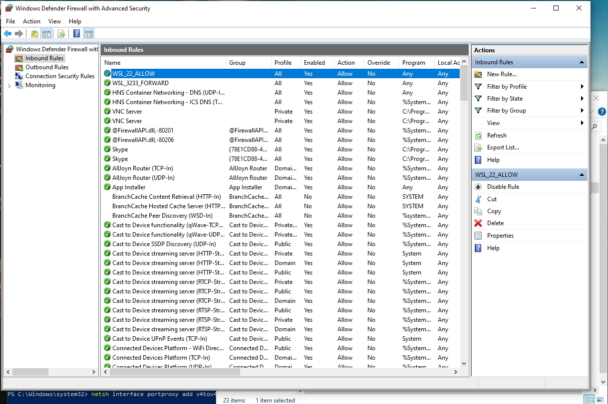

Update Ubuntu Packages List :
sudo apt update
Install openssh-server :
sudo apt get openssh-server
Stack Overflow Link Command
Port Forwarding Command
netsh interface portproxy add v4tov4 listenport=22 listenaddress=0.0.0.0 connectport=22 connectaddress=172.19.133.120
Add firewall rule from windows defender.

Analisys code for knowledge from https://stackoverflow.com/questions/49835559/access-a-web-server-which-is-running-on-wsl-windows-subsystem-for-linux-from-t
$remoteport = bash.exe -c "ifconfig eth0 | grep 'inet '"
$found = $remoteport -match '\d{1,3}\.\d{1,3}\.\d{1,3}\.\d{1,3}';
if( $found ){
$remoteport = $matches[0];
} else{
echo "The Script Exited, the ip address of WSL 2 cannot be found";
exit;
}
#[Ports]
#All the ports you want to forward separated by coma
$ports=@(80,443,10000,3000,5000);
#[Static ip]
#You can change the addr to your ip config to listen to a specific address
$addr='0.0.0.0';
$ports_a = $ports -join ",";
#Remove Firewall Exception Rules
iex "Remove-NetFireWallRule -DisplayName 'WSL 2 Firewall Unlock' ";
#adding Exception Rules for inbound and outbound Rules
iex "New-NetFireWallRule -DisplayName 'WSL 2 Firewall Unlock' -Direction Outbound -LocalPort $ports_a -Action Allow -Protocol TCP";
iex "New-NetFireWallRule -DisplayName 'WSL 2 Firewall Unlock' -Direction Inbound -LocalPort $ports_a -Action Allow -Protocol TCP";
for( $i = 0; $i -lt $ports.length; $i++ ){
$port = $ports[$i];
iex "netsh interface portproxy delete v4tov4 listenport=$port listenaddress=$addr";
iex "netsh interface portproxy add v4tov4 listenport=$port listenaddress=$addr connectport=$port connectaddress=$remoteport";
}